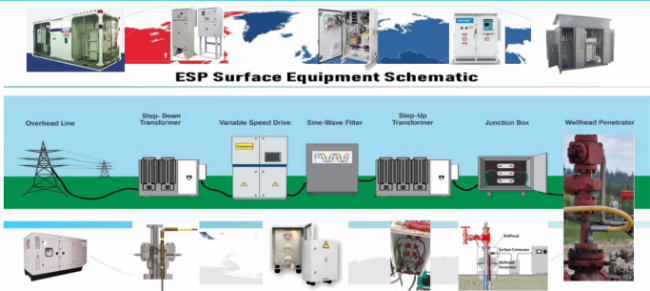

Introducción
Los motores de inducción son también llamados asíncronos, debido a que el motor siempre gira a menor velocidad que la velocidad de rotación del campo magnético en el estator, a esta diferencia de velocidad se le denomina deslizamiento y se mide en términos porcentuales.
Hay dos tipos de motores de inducción clasificados de acuerdo al tipo de rotor como, motor con rotor jaula de ardilla y motor con rotor devanado.
1. Principio de funcionamiento de un motor de inducción
Cerca del 50% del consumo de energía global es generada por motores de inducción dado que son simples, resistentes, económicos y fáciles de mantener. El propósito de un motor es transformar la energía eléctrica en energía mecánica o movimiento capaz de realizar un trabajo, por ejemplo, el giro de un eje. El motor de inducción tiene dos partes principales, el estator que es la parte fija del motor y el rotor que es la parte giratoria. Estos se encuentran separados por un espacio de aire que permite el giro del rotor, el cual también es llamado entrehierro.
Básicamente el estator está compuesto por un conjunto de láminas metálicas, un devanado de 3 bobinas y una entrada de alimentación de voltaje AC trifásico.
Los motores de inducción son también llamados asíncronos, debido a que el motor siempre gira a menor velocidad que la velocidad de rotación del campo magnético en el estator, a esta diferencia de velocidad se le denomina deslizamiento y se mide en términos porcentuales.
Hay dos tipos de motores de inducción clasificados de acuerdo al tipo de rotor como, motor con rotor jaula de ardilla y motor con rotor devanado.
1.1 Características del devanado del motor - campo magnético y movimiento mecánico.
Las 3 bobinas del devanado del estator están conectadas a un punto estrella y separadas espacialmente a 120° una de la otra, pasando a través de los espacios del estator formados por delgadas láminas de acero apiladas y ubicadas dentro de la estructura de acero o hierro que contiene los componentes del motor.
Cuando una corriente trifásica pasa a través del devanado del estator, se produce un campo magnético giratorio el cual genera la rotación del rotor que se encuentra ubicado en el centro de las bobinas. La frecuencia de giro del campo magnético será igual a la de la corriente alterna con la que se alimente el motor.
Teóricamente cuando pasa corriente a través de un conductor, se produce un campo magnético alrededor de este.

Cuando la corriente pasa a través de un sistema trifásico el campo magnético producido se refleja en la imagen
Debido a las variaciones de la corriente AC en el sistema trifásico, el campo magnético generado gira en diferentes direcciones de tal manera que se genera una fuerza uniforme rotativa.
De acuerdo a la ley de Faraday, si se ubica un conductor cerrado en el centro del campo magnético, se genera una fuerza electromotriz que produce una corriente a través del circuito. Con el circuito cargado dentro del campo magnético, se crea una fuerza magnética haciendo que el circuito empiece a rotar.

Vídeo en YouTube ¿Cómo funciona un motor de inducción?
1.2 Motores Jaula de ardilla
El rotor de un motor de inducción
Se compone de laminaciones ranuradas. Estas están apiladas cuidadosamente para crear una serie de ranuras para el devanado de motor. Existen dos tipos de devanado de rotor: (1) Devanados trifásicos convencionales hechos de alambre aislado y (2) Devanados de Jaula de Ardilla.

Un rotor devanado
tiene un devanado trifásico similar al del estator, el cual está distribuido uniformemente en las ranuras y normalmente está conectado en Y (estrella) con tres conductores. Los terminales están conectados a tres anillos colectores, los cuales giran junto con el rotor.

Rotor Jaula de Ardilla
En un motor de inducción con rotor Jaula de Ardilla el rotor tiene barras conductoras incrustadas en los espacios formados por las laminaciones del rotor, las cuales se conectan entre sí en sus extremos utilizando anillos que también son conductores. La corriente pasa por las barras generando un campo magnético rotativo que crea la fuerza magnética que hace girar el rotor.
Laminaciones de rotor Jaula de Ardilla
La electricidad es inducida por el estator por inducción magnética y no por una conexión eléctrica directa, por lo que este tipo de motores recibe el nombre de Motor de Inducción. Las delgadas láminas con núcleo de hierro son empacadas dentro del rotor para evitar al máximo la pérdida de corriente.

1.3 Generalidades
Un motor de inducción se compone de dos partes principales, el estator que es la parte estática y el rotor que es la parte giratoria. Estos se encuentran separados por un espacio de aire conocido como entrehierro, que es necesario para evitar la fricción entre los dos componentes y se llena de aceite para lubricar los rodamientos y remover el calentamiento generado por la pérdida de energía.
En ambos tipos de motor, de rotor devanado y de rotor jaula de ardilla, la velocidad de giro del campo magnético se conoce como Velocidad de Sincronismo (NS) y se calcula a partir de la frecuencia de la fuente de voltaje (Hertz) y el número de polos en el campo magnético del motor con la siguiente fórmula:
La diferencia entre la velocidad del campo magnético y la velocidad del rotor (NR) se conoce como deslizamiento (Slip), el cual se calcula con la siguiente fórmula:
El deslizamiento es prácticamente cero sin carga y es igual a uno (100%) cuando el rotor está bloqueado.
Otro concepto importante para analizar el comportamiento de los motores de inducción es el factor de potencia, el cual representa la relación que existe entre la potencia real de trabajo y la potencia total consumida por la carga o el consumidor conectado a un circuito eléctrico de corriente alterna. Como la potencia activa o real de trabajo nunca puede exceder la potencia aparente o consumida por la carga, se deduce que el factor de potencia nunca puede ser mayor a uno o 100%. Si el factor de potencia es menor que “1”, dicho número representará el desface entre la intensidad de la corriente eléctrica y la tensión o voltaje en el circuito de corriente alterna.
Si el factor de potencia es cercano a “1”, esto indica un mejor aprovechamiento del consumo de energía eléctrica, es decir que habría menos pérdida de energía y una mayor eficiencia de trabajo en los generadores que producen esa energía.
La eficiencia de un motor se define como la relación entre la potencia útil de salida y la potencia de entrada total y generalmente se expresa en porcentaje.
Generalmente cuando una máquina transforma energía de una forma a otra siempre hay una pérdida. Esta pérdida ocurre en la misma máquina y provoca un incremento de temperatura y una reducción de la eficiencia.
Aplicaciones para los Sistemas de Levantamiento Artificial
Como se mencionó previamente, el propósito del motor es convertir energía eléctrica en movimiento para mover un eje. Este eje es conectado a los demás componentes del sistema de levantamiento artificial para llevar el fluido de pozo a superficie.
En aplicaciones de sistemas de levantamiento artificial, por ejemplo, Bombas electrosumergibles, los motores son de inducción, de dos polos, trifásico, tipo Jaula de Ardilla.

En un motor de inducción en superficie, el tamaño es proporcional a la potencia requerida, a mayor potencia mayor tamaño. Sin embargo, para aplicaciones petroleras debido a las restricciones de espacio en el completamiento de los pozos, para obtener la potencia requerida, el diámetro y la longitud del motor varían.
Al ser asíncronos, estos motores giran por debajo de las 3.600 rpm en sistemas de 60 Hertz de tal manera que el deslizamiento oscila entre los 100 y 150 rpm, es decir, la rotación normal será alrededor de 3.500 rpm. El diseño y voltaje de operación de los motores puede ser menor a 230 voltios o mayor a 7.000 voltios. El amperaje requerido puede estar entre 12 y 343 amperios.
Para estas aplicaciones, la eficiencia del motor de inducción dependerá de la carga de trabajo de este, así, a mayor carga, se alcanzará la máxima eficiencia.
Como todos los motores, los motores de inducción para sistemas de levantamiento son sensibles a las temperaturas de operación y su vida útil se reducirá si el equipo funciona a temperaturas mayores a las especificaciones de diseño. Esto se debe a que los motores contienen gran número de materiales (metales, plásticos, compuestos, etc), los cuales tienen su máximo límite de temperatura donde sus propiedades mecánicas y eléctricas se pierden, de tal manera que la máxima temperatura del motor es el mínimo de los límites de todos los materiales en el motor.

2. Principio de funcionamiento de un motor de imanes permanentes
2.1 Características y tipos de los rotores
Normalmente, en un motor eléctrico el rotor está ubicado dentro del estator, sin embargo, para los motores de imanes permanentes hay estructuras con rotores externos.
De acuerdo con el diseño del rotor, los motores sincrónicos están divididos en: Motor síncrono de imanes permanentes de superficie y de imanes incrustados.
En los rotores con imanes en superficie (SPM), los imanes son mantenidos en posición por una cinta compuesta que los envuelve alrededor del rotor. Este tipo de motor es utilizado en un amplio rango de aplicaciones cuando se requieren altas eficiencias y alta velocidad. Este diseño es altamente eficiente debido a que el torque es generado directamente por la reacción entre el campo magnético de la superficie de los imanes y los campos generados por el devanado en el estator. De igual manera hay pérdidas mínimas de energía en el rotor, debido a que el campo magnético de los imanes actúa directamente en el entrehierro.
Las principales desventajas de los motores SPM son la cantidad de material magnético requerida para generar el torque comparado con otros tipos de motor y los altos costos de manufactura.
Por otro lado, en los rotores con imanes incrustados (IPM), barras de imanes se encuentran incrustadas en los agujeros del rotor, el cual está fabricado por capas de láminas de acero. Los motores IPM usualmente se fabrican con menos material magnético que los SPM, lo que permite reducir los costos de manufactura. Adicional al campo magnético generado por los imanes permanentes, los IPM también utilizan la reluctancia del rotor para mejorar la intensidad del campo magnético. Si bien esto mejora la relación de torque-material magnético, se reduce el pico de eficiencia comparado con un SPM.
Los videos que se mencionan a continuación describen gráficamente la composición interna de los tipos más comunes de motores permanentes y así mismo un ejemplo de aplicación del fabricante Skoda.
2.2 Partes eléctricas y componentes

El motor de imanes permanentes tiene dos partes principales, el estator que es la parte fija y el rotor que particularmente tiene imanes compuestos por elementos como el disprosio, el gadolinio o el neodimio, elementos, en su mayoría, importados de China, escasos, caros y difíciles de reciclar. Gracias a estos imanes, la inducción no es necesaria para generar el campo magnético o la producción de corriente.
En la imagen se observa:

Bar wound Wire: Devanado del estator
Rotor core sections: Núcleo del rotor conformado por laminaciones de acero
Bearing support Assembly: Conjunto de cojinetes
Magnets: Imanes
Steel plate: Placa de acero
Rotor hub: Buje del rotor
Stator core: Núcleo del estator conformado por laminaciones de acero
2.3 Generalidades
Los motores sincrónicos son clasificados como máquinas de alta velocidad cuando las RPM>500, y máquinas de baja velocidad cuando las RPM<500. En ciertas aplicaciones, los motores sincrónicos son preferidos sobre los motores de inducción tipo jaula de ardilla por las siguientes razones:


Los sistemas de levantamiento artificial para el sector petrolero han sido usados por más de 80 años, principalmente operados con motores de inducción. Los proveedores de estos sistemas continuamente desarrollan nuevas y mejores tecnologías para cumplir con los desafíos de los operadores. La tecnología PMM es relativamente nueva en las operaciones occidentales. Algunos proveedores de equipos ESP reportan que los PMM pueden proveer ahorros de energía significativos del 20 al 30% sobre el motor de inducción.
Este tipo de motores están indicados para prácticamente cualquier aplicación en la que se emplee un motor de inducción y en situaciones en las que el rendimiento del motor sea un factor de importancia primaria, así como en aplicaciones de velocidad variable con cargas centrífugas como las de los ventiladores y las bombas.
3. Diferencia entre motor inducción (AM) - iman permanente (PMM)
3.1 Características del conjunto rotórico

En aplicaciones de la industria petrolera, se conoce como conjunto rotórico a los elementos que conforman el sistema de levantamiento artificial. Parte fundamental es el motor, cuya función principal es transformar energía eléctrica en movimiento de un eje y así transmitir el movimiento a lo largo de todos los ejes que conforman el equipo y lograr llevar los hidrocarburos a superficie.
Los sistemas de levantamiento que usan motores de inducción o motores PMM más comunes son Sistemas de bombeo Electrosumergible y sistemas de bombeo por cavidades progresivas

Los sistemas de bombeo electrosumergible (ESP) ofrecen un medio eficaz y económico de levantamiento de grandes cantidades de fluido y caudales desde 200 a 120.000 bpd, desde profundidades considerables en una variedad de condiciones de pozo. Estos sistemas se componen por motor eléctrico, sello, separador de gas o Intake, bombas centrífugas multietapas, cable de alimentación, controlador de motor y transformadores.
Por otro lado, los sistemas de levantamiento por cavidades progresivas (PCP) son bombas de desplazamiento positivo que usan cavidades progresivas selladas para mover fluidos hacia superficie. Los equipos PCP proporcionan un flujo que reduce el riesgo de emulsionar fluidos y evita el bloqueo de gas. La combinación de la cavidad progresiva junto con materiales de construcción de alta calidad conforman el sistema apropiado para producir flujos viscosos y abrasivos.
3.2 Cantidad de polos en motores AM y PMM. Velocidades en fondo
Como se estudió en los capítulos anteriores la velocidad de giro del motor se relaciona con la frecuencia y el número de polos del motor:
En donde f es la frecuencia y P el número de polos. Normalmente la frecuencia utilizada para operar los motores es de 50/60 Hz, lo cual se toma como una constante, dejando como factor variable el número de polos para poder cambiar la velocidad del motor.
Se puede decir entonces, que el número de polos regula la velocidad del motor teniendo que cuando el número de polos incrementa la velocidad disminuye y al disminuir el número de polos, aumenta la velocidad.

El gráfico representa los efectos del número de polos en la velocidad del motor eléctrico
Nota. El gráfico representa la velocidad de giro del eje del motor eléctrico en función de la frecuencia del voltaje a la cual está funcionando el motor y como se ve afectada por el número de polos del motor.
El número de polos siempre es un número par, como el polo N y el polo S que existen en un sistema magnético no existen por separado.
En los motores de imanes permanentes, los imanes pueden ser fabricados individualmente en diferentes formas y tamaños y pueden ser magnetizados en diferentes direcciones. Cada polo podría consistir en un número de imanes segmentados en vez de una sola pieza.

3.3 Ventajas y desventajas de los motores AM – PMM
El motor de inducción ha dominado el mercado global por décadas, sin embargo, los motores de imanes permanentes (PMM) están ganando aceptación para uso en los sistemas de levantamiento artificial. Algunos proveedores de PMM han afirmado reducción del 20 al 30% en costos de electricidad, mejora de la eficiencia y ampliación de las aplicaciones para los desafíos del sector petrolero con el uso de los motores PMM. Otros proveedores reportan incremento en las tasas de operación con estos motores debido a que la velocidad de operación puede llegar hasta las 8.500 rpm. De igual manera, el tamaño de los PMM es menor y son más livianos respecto a los motores de inducción IM.
Varios estudios de compañías operadoras y proveedores de sistemas de levantamiento artificial han encontrado que los motores PMM son una alternativa de costos competitiva frente a los motores IM.
En un estudio realizado en el año 2013 por la Society of Petroleum Engineers (SPE) junto con diferentes proveedores de equipos electrosumergibles con el fin de evaluar los beneficios de la tecnología PMM, se encontró que los equipos PMM son más pequeños y con mejor densidad de potencia y torque, pueden operar a velocidades más altas, son más eficientes y tienen un factor de potencia más alto.


Los motores PMM son significativamente más pequeños en volumen, tienen alta densidad de potencia y torque, tienen 70% más potencia y 65% mejor torque que los motores IM. Estas ventajas benefician en algunas aplicaciones donde el tamaño, la longitud y el peso del motor son importantes.
Velocidad de Motor
Los PMM operan a velocidades sincrónicas ya que no existe el deslizamiento. Las velocidades más altas de operación en los PMM son un beneficio, esto quiere decir que los motores PMM operan a una velocidad sincrónica de 3.600 rpm independientemente de la carga.
Nota. El gráfico representa la relación entre la velocidad del motor y el porcentaje (%) de carga del motor eléctrico, haciendo el comparativo entre un motor de inducción (IM – Línea roja) y un motor con imanes permanentes (PMM- línea azul). Tomado de Society of Petroleum Engineers. SPE-185129-MS Leveraging ESP Energy Efficiency with Permanent Magnet Motor, 2017
Corriente y Aumento de la Temperatura de Motor
Dado que el rotor PMM no está formado por devanados de cobre, la corriente, la resistencia eléctrica y la temperatura del motor son ligeramente menores que en los motores IM. Estas condiciones permiten que la vida útil de los PMM incremente considerablemente respecto a los IM.
Nota. El gráfico representa la relación entre el porcentaje (%) de corriente del motor (izquierda) y el cambio de temperatura (derecha) en función del porcentaje (%) de carga del motor eléctrico, haciendo el comparativo entre un motor de inducción (IM – Línea roja) y un motor con imanes permanentes (PMM- línea azul). Tomado de Society of Petroleum Engineers. SPE-185129-MS Leveraging ESP Energy Efficiency with Permanent Magnet Motor, 2017
Eficiencia y Factor de Potencia
Los motores PMM utilizan la energía eléctrica de manera más eficiente que los IM variando desde condiciones de baja velocidad/bajo torque a condiciones de alta velocidad/alto torque.
En condiciones de 3.600 rpm y 100% de torque la diferencia de eficiencia es aproximadamente del 6% entre los PMM y los IM.
Nota. El gráfico representa la relación entre el factor de potencia (izquierda) y la eficiencia (derecha) de los motores en función del porcentaje (%) de carga del motor eléctrico, haciendo el comparativo entre un motor de inducción (IM – Línea roja) y un motor con imanes permanentes (PMM- línea azul). Tomado de Society of Petroleum Engineers. SPE-185129-MS Leveraging ESP Energy Efficiency with Permanent Magnet Motor, 2017
Una de las ventajas más importantes del PMM es que mantiene un alto factor de potencia independientemente de la carga, generalmente en un motor IM cuando la carga es mayor o igual al 50% el factor de potencia puede estar en 0.6 y 0.85, a diferencia de los motores PMM que para cargas mayores al 50% el factor de potencia puede estar entre 0.92 y 0.98. Esto se refleja en reducción de costos de energía eléctrica con factores de potencia más altos.
Nota. El gráfico representa las curvas de comportamiento de un motor PMM: Corriente nominal (Línea verde), voltaje nominal (Línea amarilla ), Velocidad de giro (RPM) (Línea gris), eficiencia (%) (Línea azul), factor de potencia (% (Línea naranja)); en función de % la carga del motor. Tomado de Society of Petroleum Engineers. SPE-185273-MS Case Study, Permanent magnet Motor Operation Below Perforation in Stagnant Fluid, 2017

Nota. El gráfico representa las curvas de comportamiento de un motor IM: Corriente nominal (Línea verde), voltaje nominal (Línea amarilla), Velocidad de giro (RPM)(Línea gris), eficiencia (%) (Línea azul), factor de potencia (%) (Línea amarilla); en función de % la carga del motor. Tomado de Society of Petroleum Engineers. SPE-185273-MS Case Study, Permanent magnet Motor Operation Below Perforation in Stagnant Fluid, 2017
A pesar de las ventajas de los PMM sobre los IM, existen desventajas asociadas a:
El costo de manufactura es más elevado
Los imanes son fabricados con materiales escasos, siendo China el principal país que suministra el material magnético
Costo de los sistemas de operación elevados. No puede operarse sin un controlador (VSD/VFD)
4. Variador de velocidad (VSD) - Controles para motor PMM
Los principales equipos de superficie son:
transformador reductor
VSD
transformador elevador
filtros
caja de conexionado
unidad de choke
penetradores, entre otros
El componente central, del total de equipos de superficie, es el variador de frecuencia VSD. Es con ayuda de este equipo que se opera el motor de fondo, que puede ser asincrónico o de imán permanente. Este permite arrancar, poner en operación, detener, configurar protecciones del equipo instalado y operar el motor en diferentes modos tecnológicos.
El VSD es un equipo complejo que incluye diferentes componentes, entre los que se destacan: un filtro de entrada, un filtro de salida, cuando están internos en el equipo, un variador o drive, un controlador y demás equipo de soporte para el manejo de todos los componentes y sistemas internos del VSD como una unidad.
El controlador, como componente básico del VSD es el dispositivo de interfaz entre operador y equipo. En el controlador se configura las características de los equipos de superficie y fondo, las protecciones y los modos de operación del motor.
En caso de no tener suministro eléctrico en el sitio del pozo, se conecta el transformador reductor, el cual por una relación de transformación, convierte el voltaje de la red en un voltaje de baja tensión con el que operan los equipos.
Del transformador reductor la tensión pasa al filtro de entrada y de allí al VSD como voltaje, frecuencia y fases. Una vez en el VDS y con toda la información ya configurada del equipo de fondo y las variables de operación, el voltaje pasa al filtro de salida, si se tiene previsto y de allí al transformador elevador.
El transformador elevador, que se ha configurado previamente de acuerdo con los parámetros requeridos de alimentación del motor de fondo, se conecta con la caja de conexionado o caja de venteo. De esta forma, se configuran los elementos necesarios:
Transformador reductor
Filtro de entrada
Variador de frecuencia
Filtro de salida o filtro de onda seno
Transformador elevador
Caja de venteo
Nota. La imagen muestra como es el conexionado dentro del transformador y el voltaje de salida al equipo de fondo de la BES
También, de acuerdo a las características de la operación se puede incluir dentro de los equipos de superficie una unidad de choke y penetrador que se utiliza para conectar el cable de fondo con el tendido en superficie.
Con la finalidad de entender a cabalidad cómo funcionan los equipos de superficie en un sistema de bombeo electrosumergible le sugerimos acceder al siguiente enlace.
Vamos a detenernos en detalle en cada uno de los equipos de superficie básicos en un sistema BES.
Ver el recurso web
Transformadores reductores
En general, un transformador es un dispositivo que no tiene partes móviles, este transfiere energía eléctrica de un circuito a otro bajo el principio denominado “Inducción electromagnética. La transferencia de energía se hace, por lo general, con cambios en los valores establecidos para voltajes y para corrientes manteniendo la misma carga eléctrica.
Ver vídeos complementarios
Si un cable está bobinado alrededor de un núcleo de hierro y pasa una corriente a través de este, se induce un campo magnético en el núcleo. La fuerza del campo magnético depende de los KVA que pasan por el bobinado. Si hay otro cable bobinado alrededor del mismo núcleo de hierro, el campo magnético inducirá una corriente y un voltaje en el segundo bobinado.
El bobinado que recibe voltaje de una fuente de alimentación se denomina Primario y el bobinado que recibe voltaje por inducción se le denomina Secundario, como lo muestra la gráfica:

El equipo de superficie también incluye un transformador reductor o SDT que permiten reducir el voltaje del secundario con respecto al primario. Por ejemplo, el voltaje del primario puede ser 13.800 VAC, suministrado por línea de media tensión y es reducido a un voltaje secundario de 480 VAC que entra al variador.
Los VSD utilizan un transformador elevador trifásico o SUT para elevar el voltaje de salida del variador que por lo general es 480V al valor requerido por el motor de fondo. Los transformadores elevadores tienen un sistema de regulación o Taps o selectores manuales que permite entregar en la salida, es decir en el Secundario el voltaje que requiere el motor de fondo.
Caja de venteo o gabinete de conexión
La caja de venteo es un gabinete básico de conexión donde se enlazan el equipo de fondo y el equipo de superficie y tiene como función principal, además del conexionado, evacuar al exterior las posibles emanaciones de gas que, a través del cable de potencia, migran de fondo a superficie
4.1 Switchboard y variadores de velocidad como parte de un sistema ESP.
Los motores eléctricos, por lo general, operan a una velocidad constante o casi constante y con valores que dependen de la alimentación que reciben. Por lo tanto, es importante tener en cuenta las características propias del motor para establecer el equipo de superficie a utilizar.
Con la finalidad de dar arranque a los motores y ponerlos en operación se utilizan diferentes tipos de arrancadores, que van desde los más sencillos, denominados Switchboard hasta arrancadores complejos, denominados VSD.
Dentro de los sistemas de arranque de motores se diferencian tres tipos, de arrancadores,que son los más usados en la industria:
Switchboard básico.
Switchboard con arranque suave.
VSD.
Switchboards
Los switchboard son equipos básicos de arranque y parada de motores de fondo. El arranque se da de forma directa con un contactor trifásico que arranca y para el motor de fondo.
Estos arrancadores hacen que el equipo de fondo BES opere a una velocidad fija, por lo que se limita el caudal de producción, dentro de sus características no figura la de cambiar frecuencia de giro del motor por lo que se cataloga como un equipo básico.
Hay dos tipos de switchboard: de tipo básico y de arranque suave que son utilizados en aplicaciones específicas donde no se requieren cambios de frecuencia.
Los switchtboard básicos dan arranques con torques iniciales altos, que pueden afectar los componentes del motor, por lo cual se han diseñado switchboard con arranque suave que ayudan a proteger el motor en el arranque.
Los switchboard no se pueden utilizar en aplicaciones con motores PMM.
Ventajas
Fácil instalación y mantenimiento
Alta confiabilidad. Requiere mantenimientos básicos y personal no especializado
Dimensión y peso reducidos
Ventajas
Pico de corriente al arranque (modelo básico)
Límite en potencia máxima del motor BES
Velocidad invariable de rotación
No ofrecen opción de modos tecnológicos
Compatibles solo con motores asincrónicos
VSD
Con el objetivo de poder regular la velocidad de giro de los motores de fondo se incorporaron a las operaciones de producción de crudo variadores de velocidad VSD (Variable Speed Drive por sus siglas en inglés).
El variador de velocidad o VSD, con drive de variación de frecuencia y con controladores incorporados, transforma la frecuencia fija y el voltaje AC fijo a frecuencia y voltajes AC variables de corriente, también tiene como función principal el suministro de alimentación al motor de fondo y la protección del equipo
La principal característica de un VSD es que permite el ajuste de la velocidad (RPM) del motor de un sistema BES
Debido a que el VSD permite operar a un rango amplio de frecuencias, puede cambiar la capacidad de bombeo para adaptarla a las condiciones del yacimiento.
La flexibilidad operacional del equipo es conveniente cuando:
La productividad es desconocida
Cambios en las condiciones del pozo a través del tiempo
Mantenimiento de la PIP (presión en la admisión).
Algunos de los beneficios adicionales, además de la flexibilidad, son la extensión de la vida útil del equipo de fondo, los arranques suaves que no impactan sobre los componentes del sistema, la reducción de la corriente de arranque y del alto pico de torque, la velocidad controlada de forma automática por el equipo, entre otros.
Los switchboard no se pueden utilizar en aplicaciones con motores PMM.
Ventajas
Ajuste de las RPM del motor
No hay restricción en cuanto a la máxima capacidad del motor
Permite varios modos tecnológicos de operación del motor.
Puede adaptarse para operar motores AM y PMM.
Arranque suave, sin pico de corriente (en modos operativos estándar).
Permite configurar protecciones del equipo en respuesta a condiciones de la operación como por ejemplo parar el equipo cuando se tiene sobre la temperatura del equipo de fondo durante la operación.
Desventajas
Mantenimientos altamente complejos que requieren personal especializado
Dimensiones y peso considerables
Generación de armónicos en la línea
Mayores costos CAPEX
Características de un variador de velocidad VSD
4.2 Diseño de un variador de velocidad VSD (generalidades).

Controlador. Control y protección de la ESP, registro y almacenamiento de datos, Interfaz con el operador de la ESP.
La finalidad del controlador del VSD es la de efectuar el control del equipo de fondo y la protección del equipo BES. También tiene como objetivo hacer el registro de los parámetros de operación del equipo y de almacenarlos. Esta información es importante en los análisis de operación del equipo y la formular las conclusiones en caso de una falla.
Con ayuda del controlador, en su calidad de interfaz entre el operador del equipo y el sistema BES, el operador da los comandos de operación al equipo de fondo, configura los modos de funcionamiento y establece las protecciones para que el VSD actúe ante cambios en el funcionamiento del equipo o en las condiciones del yacimiento, las que puedan afectar su funcionamiento y su vida útil.
El ambiente de operación del controlador puede ser Windows, Linux u otro, dependiendo del fabricante, al igual que la interfaz depende del software instalado.
El controlador tiene, por lo general, por una pantalla, un teclado, puertos USB e indicadores lumínicos.
El diseño del controlador depende de los desarrollos y del nivel de complejidad de las operaciones que maneja. Por lo general está compuesto por:
Tarjeta interfaz que hace conversión de la información a través de protocolos de comunicación. Empareja el computador del controlador y los componentes internos y externos, como SCADA, panel de superficie y otros;
Tarjeta de alimentación. Genera voltajes adecuados para el computador del controlador, la tarjeta de interfaz, pantalla y teclado;
Computador industrial que hace el procesamiento y recopilación de registros y la adquisición y almacenamiento de datos de operación. Además, puede estar provisto de entradas y salidas análogas.
Debido a que los fabricantes generan continuamente nuevos desarrollos y mejoras los softwares de los controladores continuamente se deben actualizar.
El Drive de velocidad es el corazón del VSD, es el dispositivo que se utiliza para convertir una red eléctrica de uso en corriente trifásica con frecuencias y voltajes ajustables. Es el principal componente de un VSD y el que mayor complejidad muestra.
Nota El drive Danfoss es reconocido en el mercado como uno de los más confiables se recomienda acceder a las páginas de la compañía para conocerlo más a fondo.

Breaker principal. Control de alimentación del motor, protección cortocircuito, protección sobrecarga, protección contra arco eléctrico.
Los hay de diferentes tipos de acuerdo con la potencia del VSD en el que están instalados, por lo general son de 380 o de 480 VAC.
Filtro de entrada, se encuentra instalado al interior del VSD, en algunos casos se puede encontrar como una unidad separada, conectada al VSD, se utiliza como dispositivo de protección del sistema de alimentación por picos armónicos. Dentro de los componentes principales de un filtro se encuentra un banco de condensadores y los reactores.
Acceso a Material complementario
Filtro de salida (opcional). Al igual que el filtro de entrada, puede estar incorporado al variador en un mismo gabinete, o bien en un gabinete por separado conectado al VSD. El filtro de onda sinusoidal reduce los picos armónicos del voltaje de salida.
Transformador alimentador reduce voltajes para suministro a dispositivos internos. Los diferentes conjuntos al interior del variador trabajan con voltajes bajos. El transformador de corriente tiene como finalidad entregar el voltaje requerido para que los componentes operen adecuadamente.
Medidor eléctrico para medición de voltaje y corriente del VSD
A través del medidor eléctrico se establecen los voltajes que están ingresando al VSD.
Sistemas de refrigeración. Debido a las condiciones de operación (medio ambiente) y al funcionamiento de los componentes internos se generan altas temperaturas que se deben disipar por medio de sistemas de refrigeración instalados al interior del variador. La finalidad es generar temperaturas de operación del equipo que no afecten los componentes.
Bloque de terminales para conexión de dispositivos externos. A través del bloque de terminales, se pueden conectar al variador dispositivos internos, como por ejemplo Scada que permite transmitir los datos de funcionamiento del equipo a un usuario remoto.
Tarjeta backspin para protección del equipo de fondo durante giro en inversa del sistema. Instalada en los equipos como protección del equipo cuando el equipo gira en sentido contrario. Los equipos BES levantan una columna de fluido por la tubería para poner producción en superficie, eventos de parada, cuando el equipo deja de funcionar, la columna de fluido, por acción de gravedad comienza a desplazarse de regreso a fondo de pozo, eso genera un giro en inversa de los componentes de la bomba, dando lugar a giro del eje en sentido contrario, este giro hace que los rotores del motor giren también en reversa y que el motor PMM se convierta en un generador de voltaje, dicho voltaje generado puede ser muy cercano al voltaje nominal del equipo.
Este voltaje, que viaja a través del cable de fondo, se transmite a superficie pudiendo ser fatal. Por otro lado, el efecto backspin también puede afectar la integridad de los equipos de fondo en el evento en que se intente dar arranque estando el equipo girando en sentido inverso. La tarjeta no permite dar arranque al equipo hasta tanto la frecuencia de giro no sea segura.
Supresor de voltajes. Actúan en eventos de sobre voltajes para protección del equipo
4.3 Configuración del controlador para motores AM - PMM.
Dependiendo del tipo de controlador, los datos se ingresan al computador industrial. Por lo general con la ayuda de un teclado numérico o alfanumérico, en el controlador del VSD, es posible configurar datos tales como:
Información del campo, cluster y pozo donde está instalado el equipo ESP.
Hora y fecha.
Unidades de medición.
Modo de arranque: Manual, Automático, Programado.
Corriente nominal del VSD.
Configuración del drive.
Configuración del motor AM o PMM.
Tipo AM o PMM.
Potencia.
Voltaje.
Amperaje.
RPM nominal.
Frecuencia nominal.
Factor de potencia para motores PMM.
Inductancia.
Cantidad de pares de polos.
Especificación de filtros de entrada y salida y características.
Configuración transformador elevador SUT.
Tipo de control U/F, Vector u otro de acuerdo al fabricante del equipo.
Nota: El modo U/F se utiliza para configurar frecuencia contra voltaje. En voltaje en el punto 0 Hz establece el voltaje de salida del variador a 0Hz y Voltaje U5 establece el voltaje en cinco puntos de la característica en tanto que Frecuencia 6 establece la frecuencia en cinco puntos de la característica.
Tipo y configuración de parámetros del sensor de fondo.
Tipo y configuración del panel de superficie.
Configurar información de la bomba. Caudal, levantamiento, profundidad de asentamiento (sólo con carácter informativo).
Cada controlador responde a unas necesidades específicas del fabricante y de allí la información que requiere que se le incorpore.
4.4 VDS como protección del equipo de fondo
A través del controlador del VSD se pueden configurar protecciones del equipo de fondo que actúan cuando hay parámetros internos o externos fuera de los rangos establecidos de operación, entre las principales protecciones que por lo general los VSD incluyen, se encuentran:
Sobrevoltaje o bajo voltaje.
Desbalance de voltaje y corriente.
Sobrecarga y baja carga del motor.
Desbalance de corriente de motor.
Corriente máxima de motor.
Presión en la admisión y en la descarga.
Alta temperatura y alta vibración del motor.
Bajo caudal.
Resistencia al aislamiento.
Pérdida de comunicación con el Drive.
4.5 Configuraciones tecnológicas de operación del VSD con motores AM y PM.
Modo cíclico o periódico que se utiliza para adaptar la ESP a las condiciones de yacimiento deteniendo o arrancando el equipo para permitir la recuperación de la presión en fondo.
Modo alternancia de frecuencia que es utilizado para adaptarse a las condiciones de yacimiento sin que el equipo pare.
Modo de cambio programado de frecuencia que se utiliza para aumentar o disminuir la frecuencia durante cierto periodo de tiempo para lograr las condiciones requeridas de pozo.
Modo mantenimiento de parámetros que es utilizado para mantener uno de los parámetros críticos de aplicación de la ESP cambiando la frecuencia del VSD.
Modo de optimización de voltaje y salida. Utilizado para establecer la corriente mínima posible del motor cambiando el voltaje de salida para motores AM y PMM.
Modo sacudida que se utiliza para la circulación por etapas para remover deposiciones de sólidos aumentando la frecuencia por cierta cantidad de tiempo.
4.6 Actualización de controladores de VSD para manejo de motores PMM.
Dichas tarjetas son montadas en controladores ya existentes o en controladores totalmente nuevos que se instalan en los VSD
Las tarjetas se programan con softwares especialmente diseñados para manejar tales motores.
El diseño general del controlador es similar al de un controlador convencional que incluye configuración de parámetros de equipo de superficie y fondo, configuración de protecciones y de modos tecnológicos de operación.
Glosario
Estator:componente fijo de un motor de inducción
Devanado:hilo conductor enrollado y aislado para conformar el estator y/o el rotor de un motor electrico
Voltaje/Corriente AC Trifásico:sistema de producción, distribución y consumo de energía eléctrica formado por tres corrientes alternas monofásicas de igual frecuencia y amplitud, que representa una diferencia entre ellas de 120°
Sistemas de levantamiento:sistemas utilizados en la industria petrolera para la producción de hidrocarburos llevando el fluido desde el fondo del yacimiento hasta la superficie
Sistemas de bombeo Electrosumergible:tipo de sistema de levantamiento generalmente compuestos motor eléctrico, sello, separador de gas o Intake, bombas centrífugas multietapas, cable de alimentación, controlador de motor y transformadores
Intake:componente de un sistema de bombeo electrosumergible por donde ingresa el fluido de pozo al sistema de levantamiento
Referencias bibliográficas
Armónicos: origen, efectos y soluciones. (2019, 13 mayo). Circutor. http://circutor.es/es/productos/destacados/4622-armonicos-origen-efectos-y-soluciones
Baker, H.(2014). Submersible Pump Handbook 11th Edition.
Comparison of Permanent Magnet Electric Motor Technology. (2018, 4 mayo). [Vídeo]. YouTube. https://www.youtube.com/watch?v=E5VS4s-R7vk
Dispositivo electrónico para control infinito de velocidad en motores de corriente alterna. (s. f.). [Fotografía]. EcuRed. https://www.ecured.cu/Variador_de_velocidad
Dmitry, L. (s. f.). Permanent Magnet Synchronous Motor. Engineering Solutions. https://en.engineering-solutions.ru/motorcontrol/pmsm/
ESP&OIL. ENGINEERING CONSULTANTS. (2004). Filtro de armónicas [Fotografía.]. International Training Group.https://christian3306.files.wordpress.com/2010/10/bombeo-electrosumergible.pdf
How does an Induction Motor work ? (2017, 31 agosto). [Vídeo]. YouTube. https://www.youtube.com/watch?v=AQqyGNOP_3o
Motor de inducción. (2016, 22 noviembre). Máquinas Eléctricas. https://maquinaselectricasblog.wordpress.com/motor-de-induccion/
DSociety of Petroleum Engineers. (2017).Leveraging ESP Energy Efficiency with Permanent Magnet Motor.
Society of Petroleum Engineers. (2017).Case Study, Permanent Magnet Motor Operation Below Perforations in Stagnant Fluid.
Synchronous motor with permanent magnets. (2018, 12 octubre). [Vídeo]. YouTube. https://www.youtube.com/watch?v=NRxo5aDGG8M
TTakacs, G. (2018).Electrical Submersible Pumps Manual. 2nd edition.
Wildi, T.( 2007). Máquinas Eléctricas y sistemas de potencia. Sexta edición.
Fotografías y vectores tomados de https://www.shutterstock.com/ y https://www.freepik.es/
Licencia Creative Commons
CC BY-NC-SA
Ver licencia.